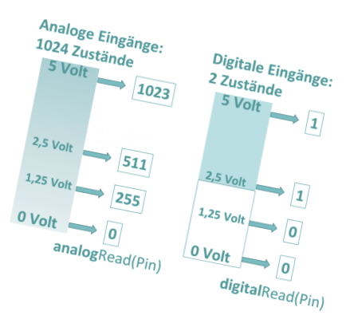
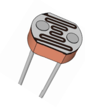
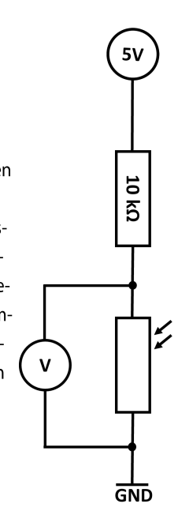
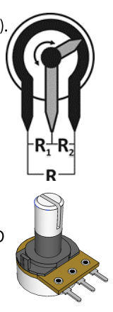

Wie wird aus Licht eine Zahl und aus dieser Zahl eine Entscheidung? Du liest Spannungen mit analogRead(), hältst Messwerte fest und baust daraus einen Dämmerungsschalter, einen einstellbaren Blinker und einen einfachen Batterietester.
Du arbeitest hier mit einem Arduino Uno R3 / ATmega328P bei 5 V und der Arduino IDE. Die angegebenen Werte und Anschlüsse beziehen sich auf dieses Board. Halte ein USB-Datenkabel, Steckbrett, Leitungen, ein lineares 10-kΩ-Potentiometer, einen LDR und einen 10-kΩ-Festwiderstand bereit. Für den Batterietester brauchst du zusätzlich eine rote, gelbe und grüne LED mit je einem 330-Ω-Vorwiderstand. Optional kommt später ein Halter mit einer bekannten 1,5-V-Alkaline-Zelle dazu.
Vor jedem Umbau: Trenne USB und alle anderen Spannungsquellen. Prüfe Leitungen und Steckbrettreihen, bevor du USB wieder anschließt. A0 bekommt jeweils nur die auf der aktuellen Seite beschriebene Signalquelle. Nutze die Protokollfelder für echte Beobachtungen; ohne Hardware kennzeichnest du deine Aussagen als Erwartung. Am Ende öffnest du „Ergebnisse & Abschluss“, prüfst deine Einträge und exportierst sie.

Er liefert LOW / 0 oder HIGH / 1. Zwischen sicherem LOW und sicherem HIGH liegt ein Übergangsbereich; etwa 2,5 V ist beim Uno R3 kein verlässlich vorgegebener Digitalzustand.
Er wandelt eine Spannung in eine Zahl um: ungefähr 0 V ergibt 0, 2,5 V liegt etwa bei 511/512 und 5 V ergibt 1023. Das gilt hier bei nominell 5 V Referenz.
Der Ausdruck analogRead(sensor) führt genau in diesem Moment eine Messung aus und liefert eine Zahl zurück. Du könntest sie direkt mit Serial.println(analogRead(A0)); ausgeben. Soll dieselbe Messung anschließend auch für eine Rechnung oder Entscheidung dienen, speicherst du sie in messwert.
Verwende ein dreipoliges 10-kΩ-Potentiometer. Beim abgebildeten Typ liegt der Schleifer in der Mitte; bei einem anderen Typ prüfst du dessen Anschlussbelegung. Stecke die drei Anschlüsse in getrennte Kontaktreihen. Trenne vor dem Aufbau USB.
| Bauteilanschluss | Verbindung am Uno R3 |
|---|---|
| Ein äußerer Potianschluss | 5V |
| Anderer äußerer Potianschluss | GND |
| Schleifer (beim gezeigten Typ Mitte) | A0 |
Die beiden äußeren Anschlüsse sind die Enden des Gesamtwiderstands. Verbinde 5V und GND nie direkt miteinander. Der Schleifer liefert nur das Signal für A0; er erhält keine zusätzliche feste Verbindung zu 5V oder GND. AREF bleibt frei. Für diesen Aufbau brauchst du weder eine zusätzliche Bibliothek noch pinMode(A0, OUTPUT).
a6_messwert.Serial.begin(9600). Drehe das Potentiometer langsam von Anschlag zu Anschlag.const int sensor = A0;
int messwert;
void setup() {
Serial.begin(9600);
}
void loop() {
messwert = analogRead(sensor);
Serial.println(messwert);
delay(250);
}Erwartung: Alle 250 ms erscheint ungefähr ein neuer Wert zwischen 0 und 1023. An den Endstellungen erwartest du Werte nahe den Skalenenden, dazwischen Zwischenwerte. Die Drehrichtung hängt von der Belegung der äußeren Anschlüsse ab. Ein offener, nicht verbundener Eingang liefert keine verlässliche Nullmessung.
Fehlersuche: Kein Port: prüfe Datenkabel, USB-Anschluss und Boardauswahl. Hochladen scheitert: prüfe Board/Port und schließe andere Programme, die den Port verwenden. Unlesbare Zeichen: prüfe 9600 Baud. Ständig 0 oder 1023: prüfe den Schleiferanschluss und die getrennten Steckbrettreihen. Ändere jeweils nur eine Sache und teste erneut.
analogRead(sensor) erzeugt eine Zahl.messwert = ... merkt sich diese Zahl.sensormesswertUntersuche jetzt das Speichern ohne angeschlossene Hardware. Die gelbe Zeile zeigt den gerade ausgeführten Schritt. Erst bei analogRead(sensor) wird die aktuelle Reglerspannung gewandelt und in messwert gespeichert. Die Simulation verwendet eine vereinfachte, idealisierte Umrechnung; sie bildet weder Messrauschen noch die echte Ausführungsgeschwindigkeit ab.
messwert.Stopp & check: Im echten Sketch ist die global deklarierte Variable int messwert; bereits vor der ersten Messung mit 0 initialisiert. Diese Null ist noch kein Sensorergebnis. Nach einer neuen Messung zeigt der reale serielle Monitor weiterhin seine bisherige Zeile, bis Serial.println() eine neue hinzufügt; die Simulation markiert die dazwischen noch ausstehende Ausgabe.
Der Messwert 511 bedeutet nicht 511 Volt. Er beschreibt die Position innerhalb der Skala von 0 bis 1023. Für eine näherungsweise Spannung rechnest du den Anteil des Messwerts auf den Bereich bis 5 V um. Verwende weiter den Poti-Aufbau von Versuch 1.
Speichere eine Kopie deines Sketches als a6_spannung. Ersetze den Inhalt durch diesen vollständigen Sketch, überprüfe ihn und lade ihn hoch. Öffne den seriellen Monitor wieder mit 9600 Baud.
const int sensor = A0;
const float referenz = 5.0;
void setup() {
Serial.begin(9600);
}
void loop() {
int messwert = analogRead(sensor);
float spannung = messwert * (referenz / 1023.0);
Serial.print(messwert);
Serial.print("; ");
Serial.print(spannung, 3);
Serial.println(" V");
delay(250);
}U ≈ Rohwert · 5,0 V / 1023. Vergleiche mit der Anzeige. Drei gedruckte Nachkommastellen bedeuten nicht automatisch drei genaue Messstellen.Eine Spannung kann Nachkommastellen haben, zum Beispiel 2,50 V. Der Typ float kann solche Werte speichern.
Die Dezimalpunkte erzwingen eine Rechnung mit Kommazahlen. Reine Ganzzahldivision würde Zwischenwerte abschneiden.
Modellgrenze: Die Standardreferenz des Uno R3 ist seine Versorgungsspannung, nominell 5 V. Die Rechnung mit 1023 bildet die Skalenenden näherungsweise auf 0 V und 5 V ab. Der reale 10-Bit-Wandler hat 1024 Stufen (bei 5 V rund 4,9 mV pro Stufe); Referenzabweichung, Quantisierung und Rauschen begrenzen die Genauigkeit. Du erhältst damit keine kalibrierte Spannungsmessung.
Viele Sensoren verändern ihren elektrischen Widerstand. Damit daraus eine messbare Spannung wird, baust du einen Spannungsteiler. Beim LDR verändert Licht den Widerstand; dadurch verändert sich die Spannung am Verbindungspunkt und damit der Wert an A0.


Licht verändert den LDR. Der veränderte Widerstand verschiebt die Teilspannung. A0 misst diese Spannung. analogRead(A0) wandelt sie in eine Zahl.
Trenne USB und entferne das Potentiometer samt seinen Verbindungen. Baue den Spannungsteiler wie im Bild mit dem Festwiderstand auf der 5-V-Seite und dem LDR auf der GND-Seite auf. Der Kreis mit V steht für eine mögliche Spannungsmessung; an diesen beiden Messpunkten liegen in deinem Aufbau A0 und GND.
| Verbindung | So steckst du sie |
|---|---|
| 5V → 10-kΩ-Widerstand | Ein Ende des Festwiderstands an 5V. |
| Messknoten | Anderes Widerstandsende, ein LDR-Anschluss und Leitung zu A0 gemeinsam in eine Kontaktreihe. |
| LDR → GND | Den freien LDR-Anschluss an GND. Die beiden LDR-Beine dürfen nicht in derselben Kontaktreihe stecken. |
Bei diesem zweipoligen LDR ist die Richtung der beiden Beine egal. Entscheidend ist seine Position im Spannungsteiler. Wenn du Versorgungsschienen verwendest, verbinde sie mit 5V bzw. GND des Uno und prüfe mögliche Unterbrechungen der Schienen.
a6_messwert von Versuch 1, überprüfe den Sketch und lade ihn hoch. A0 und 9600 Baud bleiben gleich.U(A0) = U(5V) · R(LDR) / (10 kΩ + R(LDR)). Licht verringert den LDR-Widerstand.Erwartung: In diesem Aufbau steigt der Wert beim Abdunkeln und fällt bei mehr Licht. Die Endwerte müssen nicht 0 und 1023 erreichen. Ein LDR ist ohne weitere Kalibrierung kein Luxmessgerät. Bleibt die Anzeige unverändert, prüfe A0 am gemeinsamen Knoten, den GND-Anschluss und die Steckbrettreihen.
Nutze den LDR-Aufbau von Versuch 3 weiter. Für einen Dämmerungsschalter liest du zuerst den Sensor, speicherst den Wert und vergleichst anschließend genau diese Variable mit einem Grenzwert. Bei diesem Spannungsteiler bedeutet ein größerer ADC-Wert: Es ist dunkler. Als Anzeige verwendest du die eingebaute LED L an Pin 13; du brauchst keine externe LED.
Lege einen neuen Sketch a6_daemmerung mit dem vollständigen Code an. Überprüfe ihn, lade ihn hoch und öffne den seriellen Monitor mit 9600 Baud. 500 ist zunächst nur ein Startwert und kein allgemeingültiger Helligkeitsgrenzwert.
const int ldr = A0;
const int grenze = 500;
int helligkeit;
void setup() {
Serial.begin(9600);
pinMode(13, OUTPUT);
}
void loop() {
helligkeit = analogRead(ldr);
Serial.println(helligkeit);
if (helligkeit > grenze) {
digitalWrite(13, HIGH);
} else {
digitalWrite(13, LOW);
}
delay(250);
}grenze ein und lade erneut hoch.helligkeit == grenze bleibt sie wegen > aus.helligkeit = analogRead(ldr); überschreibt die Variable einmal pro Durchlauf mit dem aktuellen Rohwert.
if(helligkeit > grenze) prüft den gespeicherten Wert. Der Sensor wird in dieser Zeile nicht erneut gelesen. Der Variablenname helligkeit ändert nichts daran, dass hier größere Werte dunkler bedeuten.
Beim Potentiometer teilt der Schleifer den Gesamtwiderstand in zwei Teilwiderstände. Drehst du am Knopf, verändert sich die Spannung am Schleifer. Diese Spannung kannst du an A0 messen und den Rohwert zum Beispiel direkt als Wartezeit verwenden.

Vergleichsfragment, noch kein vollständiger Sketch: Hier wird zweimal pro Blinkdurchlauf gemessen.
Trenne USB. Entferne den LDR-Spannungsteiler und stelle den Poti-Aufbau von Versuch 1 wieder her: äußere Anschlüsse an 5V und GND, Schleifer an A0. Die eingebaute LED L bleibt deine Ausgabe. Erstelle a6_blinkzeit, überprüfe den vollständigen Sketch und lade ihn hoch.
void setup() {
pinMode(13, OUTPUT);
Serial.begin(9600);
}
void loop() {
int pause = analogRead(A0);
Serial.println(pause);
digitalWrite(13, HIGH);
delay(pause);
digitalWrite(13, LOW);
delay(pause);
}Erwartung: Ein kleiner Rohwert bedeutet kurze Pausen, ein großer lange Pausen. Eine ganze Blinkperiode besteht aus AN-Zeit und AUS-Zeit: näherungsweise T = 2 · pause in Millisekunden, zuzüglich der Ausführungszeit. Bei 0 oder sehr kleinen Werten erkennst du kein langsames Blinken mehr; das bedeutet nicht, dass der Code stehen bleibt.
loop() durch das Fragment oben und lade neu hoch. Drehe erneut während der AN-Pause. Vergleiche die Längen von AN und AUS und lade danach die Variante mit gespeichertem Wert wieder hoch.Ein einfacher Batterietester soll eine Spannung mit drei LEDs einordnen: Grün ab 1,4 V, Gelb von 1,2 V bis unter 1,4 V und Rot unter 1,2 V. Diese Übungsgrenzen beziehen sich auf eine einzelne 1,5-V-Zelle. Eine unbelastete Spannung allein bestimmt weder die verbleibende Kapazität noch zuverlässig den Zustand jeder Batteriechemie.
Trenne USB. Lass das Potentiometer von Versuch 5 an A0 und ergänze drei LEDs. Stecke jede LED mit ihren Beinen in getrennte Kontaktreihen. Die Anode ist bei ungekürzten Standard-LEDs meist das längere Bein, die Kathode liegt meist an der abgeflachten Gehäuseseite; prüfe bei Unsicherheit die Bauteilangabe.
| Ausgang | Reihenschaltung zur jeweiligen LED |
|---|---|
| D8 | 330 Ω → Anode der roten LED; Kathode → GND |
| D9 | 330 Ω → Anode der gelben LED; Kathode → GND |
| D10 | 330 Ω → Anode der grünen LED; Kathode → GND |
Jede LED braucht ihren eigenen Vorwiderstand. Alle GND-Verbindungen gehören zum GND des Uno. Verbinde USB wieder, lege a6_batterietester an, überprüfe den vollständigen Sketch und lade ihn hoch.
const int rot = 8;
const int gelb = 9;
const int gruen = 10;
const float referenz = 5.0;
void setup() {
pinMode(rot, OUTPUT);
pinMode(gelb, OUTPUT);
pinMode(gruen, OUTPUT);
Serial.begin(9600);
}
void loop() {
int messwert = analogRead(A0);
float spannung = messwert * (referenz / 1023.0);
Serial.print(messwert);
Serial.print("; ");
Serial.print(spannung, 3);
Serial.println(" V");
digitalWrite(rot, LOW);
digitalWrite(gelb, LOW);
digitalWrite(gruen, LOW);
if (spannung >= 1.4) {
digitalWrite(gruen, HIGH);
} else if (spannung >= 1.2) {
digitalWrite(gelb, HIGH);
} else {
digitalWrite(rot, HIGH);
}
delay(250);
}spannung = 1.19; ein. Lade hoch und vergleiche Monitor und LED. Wiederhole mit 1.20 und 1.40. Das sind vorgegebene Testdaten, keine Messungen.Verwende nur eine bekannte 1,5-V-Alkaline-Zelle im Halter. Entferne bei getrenntem USB zuerst alle drei Poti-Leitungen. Verbinde Halter-Minus mit GND. Schalte den Uno per USB ein und verbinde erst dann Halter-Plus mit A0. Die Zelle versorgt nicht das Board: Plus gehört weder an 5V noch an VIN. Notiere Rohwert, Spannung und LED-Farbe. Entferne anschließend zuerst die Plusverbindung, bevor du USB trennst. Vermeide einen Kurzschluss der Zelle.
Transferaufgabe: Zwei gleichartige 1,5-V-Zellen in Reihe ergeben nominell etwa 3 V. Welche beiden Grenzwerte brauchst du, wenn dieselben Übungsgrenzen pro Zelle gelten sollen? Erläutere, warum damit weiterhin keine Einzelzellendiagnose möglich ist. Du kannst die angepassten Bereiche mit dem Potentiometer prüfen; ein echter Zweizellen-Aufbau ist dafür nicht nötig.
Mit analogRead(Pin) erzeugst du einen ADC-Rohwert.
Eine Variable hält den Wert für alle folgenden Verarbeitungsschritte fest.
Du kannst den Wert ausgeben, umrechnen, vergleichen oder als Zeit einsetzen.